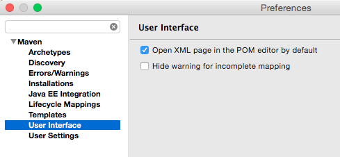
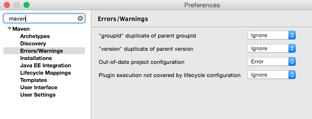

IDE setup: Eclipse
There are basically 3 steps to configuring Eclipse to work properly with the Mithlond codestyle and projects:
-
Configure some eclipse settings (in Preferences/Maven/User Interface) to enable opening pom files as xml by default. This saves you an annoying click every time opening a pom:

-
Set warnings to ignore for groupId and version duplication of parent, as well as “plugin execution not covered by lifecycle configuration”. This basically avoids adapting to some eclipse-m2e specific configuration.

-
Opening cloned projects in Eclipse To open maven projects that exist on your filesystem (eg after git clone), use File/Import.. and pick Existing Maven Projects under “Maven”.